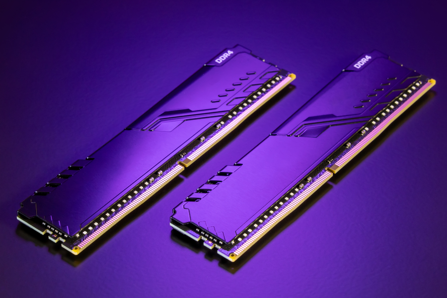

Rodzaje Ramu

Pamięć o dostępie swobodnym, pamięć główna, RAM (ang. random-access memory, main memory) – podstawowy rodzaj pamięci komputerowej. Ogólnie termin RAM odnosi się do pamięci głównej w większości komputerów, a dokładniej do pamięci półprzewodnikowych SRAM i DRAM. Choć nazwa sugeruje, że jest to każda pamięć o bezpośrednim dostępie do dowolnej komórki pamięci (w przeciwieństwie do pamięci o dostępie sekwencyjnym, na przykład rejestrów przesuwnych), ze względów historycznych oznacza ona tylko te rodzaje pamięci o bezpośrednim dostępie, w których możliwy jest wielokrotny i łatwy zapis, a wyklucza pamięci ROM (tylko do odczytu) i EEPROM, w których zapis trwa znacznie dłużej niż odczyt, mimo że w ich przypadku też występuje swobodny dostęp do zawartości. W pamięci RAM przechowywane są aktualnie wykonywane programy i dane dla tych programów oraz wyniki ich pracy. W temperaturze pokojowej zawartość większości pamięci RAM jest tracona w czasie mniejszym niż sekunda po zaniku napięcia zasilania, niektóre typy wymagają także odświeżania, dlatego wyniki pracy programów wymagające trwałego przechowania muszą być zapisane na innym nośniku danych. Pamięci RAM dzieli się na pamięci statyczne (ang. static random-access memory, w skrócie SRAM) oraz pamięci dynamiczne (ang. dynamic random-access memory, w skrócie DRAM). Pamięci statyczne są szybsze od pamięci dynamicznych, które wymagają ponadto częstego odświeżania, bez którego szybko tracą swoją zawartość. Obok swoich zalet są one jednak dużo droższe; używane są w układach, gdzie wymagana jest duża szybkość (np. pamięć podręczna procesora) lub ilość pamięci jest niewielka, więc nie opłaca się konstruować układu odświeżania (np. proste mikrokontrolery). W komputerach wymagających dużej ilości pamięci jako pamięć operacyjną używa się pamięci DRAM. Pamięć RAM jest stosowana głównie jako pamięć operacyjna komputera, jako pamięć niektórych komponentów (procesorów specjalizowanych) komputera (kart graficznych, kart dźwiękowych), jako pamięć danych sterowników mikroprocesorowych. |

Od momentu, gdy inżynierowie stworzyli pierwsze egzemplarze pamięci operacyjnej, upłynęło sporo czasu i na rynku pojawiły się różne rodzaje pamięci RAM. Pod koniec lat 90. i na początku XXI wieku głównymi typami pamięci operacyjnej były SRAM (statyczna pamięć RAM), DRAM (dynamiczna pamięć RAM) oraz SDRAM (synchroniczna dynamiczna pamięć RAM). Obecnie najpopularniejszym typem jest DDR SDRAM, czyli Double Data Rate Synchronous Dynamic Random-Access Memory. Wyrażenie Double Data Rate oznacza dwukrotnie szybsze przesyłanie danych (a co za tym idzie, możliwość jednoczesnego przesyłania wielu plików). Czwarta generacja technologii DDR, która zastąpiła SDR (Single Data Rate) SDRAM, czyli DDR4, to obecnie standard. Charakteryzuje się szybszym transferem danych, większą pojemnością i niższym napięciem niż poprzednia generacja (DDR3), która jednak wciąż jest obecna w wielu urządzeniach. Warto podkreślić, że na rynku zadebiutowała już – pod koniec 2021 roku – piąta generacja tego typu pamięci. DDR5 może osiągnąć prędkość przesyłania danych na poziomie około 6,4 GB na sekundę. Wciąż jest jednak trudno dostępna i bardzo droga, dlatego znajdziesz ją przede wszystkim w najlepszych komputerach stacjonarnych. |
Zanim wybierzesz odpowiednią dla swojego komputera pamięć RAM, warto poznać jej parametry. Przede wszystkim musisz jednak zwrócić uwagę na to, czy będzie to pamięć przeznaczona do desktopa, czy też do laptopa. Do urządzeń tego pierwszego typu są przeznaczone moduły DIMM (ang. dual in-line memory module). W laptopach natomiast (choć mogą się też czasem pojawić w komputerach stacjonarnych o niewielkim rozmiarze) wykorzystuje się mniejsze moduły nazwane SO-DIMM (ang. small outline dual in-line memory module). Zastanawiasz się, który komputer przenośny wybrać? – sprawdź nasz poradnik jaki laptop kupić. Wróćmy jednak do parametrów pamięci RAM. Poza przeznaczeniem urządzenia trzeba wziąć pod uwagę jeszcze przynajmniej dwa. Pojemność: Jest mierzona w gigabajtach (GB). Im większa pojemność,
tym więcej danych może być przechowywanych przez pamięć RAM. Mówiąc inaczej,
przy większej pojemności pamięci operacyjnej więcej aplikacji może działać jednocześnie,
a rozgrywka – być bardziej płynna.
Jest mierzona w gigabajtach (GB). Im większa pojemność,
tym więcej danych może być przechowywanych przez pamięć RAM. Mówiąc inaczej,
przy większej pojemności pamięci operacyjnej więcej aplikacji może działać jednocześnie,
a rozgrywka – być bardziej płynna.
Częstotliwość (szybkość):Wpływa na szybkość pracy pamięci RAM. Podawana jest w megahercach (MHz). Wyższe wskaźniki prędkości oznaczają szybszą reakcję na żądania odczytu i zapisu, a zatem lepszą wydajność. Standardem są obecnie pamięci 3200 MHz – z taką częstotliwością pracują najczęściej moduły DDR4. |